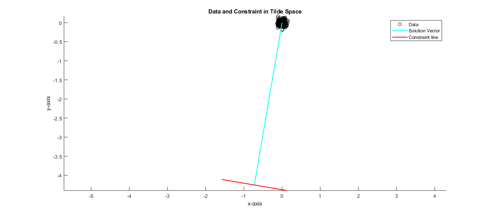
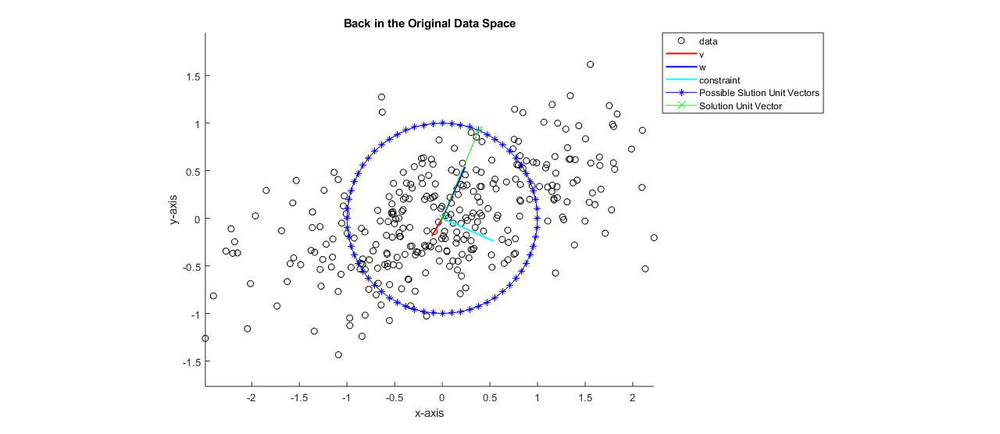

Contents
Homework2 - Question 3 - Matthew DeVerna
% Purpose: This script was written to tackle question # 2 of Math Tools % homework # 3. % Author: Matthew DeVerna % Date: 10/10/19
Load File
load('constrainedLS.mat') %{ data = 300 x 2 of x,y (horizontal, vertical) coordinates w = 2 vector %}
(A) Rewritting the optimization problem in matrix form...
% The original minization problem is: % min_v = sum(v'* data(ii,:)) --> s.t. v' * w = 1 %{ Because min_v can be written as: - ||data * v||^2 -- we remove the length^2 portion (for simplicity), and then write this as: - v' * data' * data * v -- which can eventually be manipulated into the below, using the SVD: - v' * V * S# * S# * V' * v Thus, we can define ->|| S# * V' * v ||<- as v~ which gives you... - v~' * v~ -- putting this back into length^2 form, write it as... - min v~ = ||v~||^2 Because v~ = S# * V' * v --> we can rewrite the constraint v'* w = 1 as: - v~' * (S#) * V' * w = 1 In this process we are squishing by S_pound and then rotating by V We can then say that w~ = (S#) * V' * w (in order to transform both vectors into the same space) which gives us the final equation: --> min v~ = ||v~||^2 -- such that v~' * w~ = 1 %}
(B) Solve the Transformed Problem and Plot in the Transformed Space
[U,S,V] = svd(data) ; V_transposed = V' ; short_S = diag(diag(S)) ; S_pound(1,1) = 1/S(1,1) ; S_pound(2,2) = 1/S(2,2) ; data_starStar = data * V * S_pound ; spherical_check = data_starStar'*data_starStar ; w_tilde = w' * V_transposed * short_S ; w_tilde_length = sqrt((w'*w)) ; w_tilde_unit = w/w_tilde_length ; v_tilde_length = 1/(w_tilde_length * cos(0)) ; v_tilde = v_tilde_length * w_tilde_unit ; % Plot the transformed Data in the tilde space... scatter(data_starStar(:,1) , data_starStar(:,2), 'k' ) hold on % Plot plot([0, w_tilde(1)] ,[0, w_tilde(2)], 'c', 'LineWidth', 1.5) % Create the constraint line rotate90 = [0,-1 ; 1,0] ; other_rotate90 = [0,1 ; -1,0] ; scaled_w_tilde = (w_tilde * rotate90) * .2 ; scaled_w_tilde2 = (w_tilde * other_rotate90) * .2 ; rotated_1 = scaled_w_tilde + w_tilde ; rotated2 = scaled_w_tilde2 + w_tilde ; % Creating the constraint line to plot plot([w_tilde(1), rotated_1(1)] ,[w_tilde(2), rotated_1(2)], 'r', 'LineWidth', 1.5) plot([w_tilde(1), rotated2(1)] ,[w_tilde(2), rotated2(2)], 'r', 'LineWidth', 1.5) axis equal legend('Data','Solution Vector','Constraint line') title('Data and Constraint in Tilde Space') xlabel('x-axis') ylabel('y-axis')
Transform the data back to the regular space and plot
v_vec = v_tilde' * S_pound * V ; w_vec = w_tilde * S_pound * V ; transformCheck = abs(w_vec - w') < 10e-6 figure scatter(data(:,1) , data(:,2), 'k' ) hold on plot([0, v_vec(1)] ,[0, v_vec(2)], 'r', 'LineWidth', 1.5) plot([0, w_vec(1)] ,[0, w_vec(2)], 'b', 'LineWidth', 1.5) othog2_w = w' * rotate90 ; plot([0, othog2_w(1)] ,[0, othog2_w(2)], 'c', 'LineWidth', 1.5) axis equal xlabel('x-axis') ylabel('y-axis') title('Back in the Original Data Space') % Total Least Squares Solution % The way this problem works is that you have a matrix (here I call it % 'D' which is multiplied by a unit vector. Thus, our minimzation % problem becomes: % min u_hat = ||D*u_hat||^2 % we use the SVD to break this down into the below: (again removing the % length^2 just for writing it here) % U*S*V'*u_hat which becomes % S*V'*u_hat which becomes % S*u_hat_star where u_hat_star == V'*u_hat. This becomes % u_hat_starStar -- which equals S*u_hat_star == S*V'*u_hat_starStar % Because all possible unit vectors are potential answers I can create a % matrix of unit vectors and do this for each one, finding the one with the % lowest length % Create a circle of unit vectors n = 0:64; thetas_ = (2*pi) * n ; thetas = thetas_ / 64 ; unit_vecs = [cos(thetas) ; sin(thetas)] ; % Add the new plott plot(unit_vecs(1,:), unit_vecs(2,:), 'b-*') axis equal hold on % Now we take all potential unit vectors and transform them into the % starStar space in order to find which one has the least error units_starStar = unit_vecs' * V' * short_S ; % Create a length function lengthFunc =@(x) sqrt(x * x') ; % Create a nans vector to fill with lengths length_vector = nan(length(units_starStar),1) ; % Fill it with all vector lengths in the new starStar space for ii = 1: length(units_starStar) length_vector(ii) = lengthFunc(units_starStar(ii,:)) ; end % Find the index of the lowest one (there will be two answers, but it doesn't % matter which answer you take because we are looking at squared errow) minimum_index = find(length_vector == min(length_vector)) ; % Use that minimum index to find the vector with the shortest length total_leastSQR_vec = units_starStar(minimum_index,:) ; % Now we must transform back where we came from... original_space_total_leastSQR_UNIT_vec = total_leastSQR_vec * S_pound * V % Check the unit vectors did not get screwed up along the way... check_length_is_still_one = lengthFunc(original_space_total_leastSQR_UNIT_vec) % Plot this point again - but in a new red x so you can see it plot([0,original_space_total_leastSQR_UNIT_vec(1)],[0,original_space_total_leastSQR_UNIT_vec(2)], 'g', 'Marker', 'x', 'MarkerSize', 10) legend('data','v','w','constraint', 'Possible Slution Unit Vectors', 'Solution Unit Vector', 'Location', 'northeastoutside') % Obviously I did something wrong in this problem but I know that the % solutions between this problem and the earlier problem will not be equal % because we are utilizing two different constraints for % minimization/optimization.
transformCheck =
1×2 logical array
1 1
original_space_total_leastSQR_UNIT_vec =
0.3827 0.9239
check_length_is_still_one =
1
